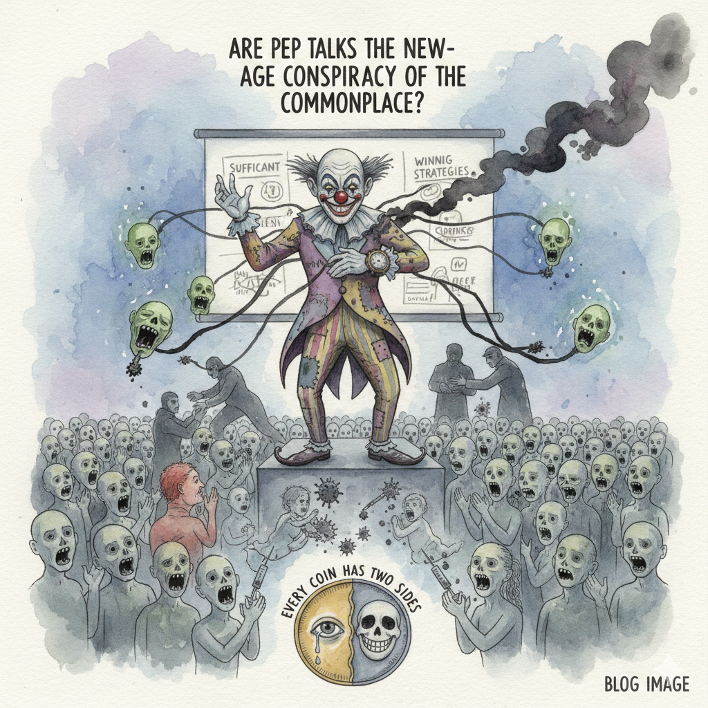

Are pep talks the new-age conspiracy of the commonplace?
Have you ever been to a seminar — or should I say, that kind of hall or auditorium — entailing a massive bovine crowd and a polished, outlandish person of perceived reverence to the superlative? It's funny and sad to even think about the mindless clapping and massive praise supplying vigor to the theatrical orator. I am not saying I'm against public speaking... but, reflect upon it deeply. The touchy words, a little nudge to personal emotions and appealing directly to the collective conscience of the crowd — haven't it gone a bit too far? "But, you were supposed to motivate us... Why are you being too personal here?" — a meathead shouted abruptly only to be silenced by the disciplinarians! Ever heard of "Ben 10" — the popular cartoon series of a boy with a magical watch enabling him to transform into numerous alien creatures? There was this episode starring "Zombozo" — another clown using cheap tricks to suck the life energy of innocent civilians turning them into mindlessly laughing corpse-like zombies. I wouldn't lie... but that was one of the terrifying episodes thrown by the creators! I don't wanna take it too far... but isn't there some analogy between the two? Think about it.
It's really sad where we've headed as a society. We glorify flamboyance and subdue honesty. We think that confidence is everything even when it carries little substance. When did bogus presentations and silly small talk occupy the front seat after being accepted by all? Even some of them conceded to it — how unfortunate an event it was! That was the day we lost. It's so hard to explain how intricately this disease has latched onto the very fabric of existence! And, the saddest part of 'em all — it's being imposed upon the innocent children like its nothing! It's as if deadly viruses are being injected into them to kill them without them having the slightest clue or hint.
Again coming back to the outlandish motivator of superlative perceived reverence — is he omniscient? Of course not... right? Then who gave him the authority to make sense of it all his own way and bestow that theory onto his so called "subordinates"? He preached about the causes for depression, taught about how one can change his stage of mind towards positive thinking, showed the key notes on determination for success, sources of inspiration in the form of hundreds of leadership models, value creation, how to transform problems into opportunities, the theory of win or winning strategies of life and many more in the form of slides. Not to mention, some of the slides had spelling mistakes like 'sufficiant' which reflected the unprofessionalism and the hasty way of preparing those slides. Of course he didn't prepared those slides, but even if his "subordinates" did, can we call it a silly mistake or it can be attributed to their ignorance? Whatever be it, constriction of power in the hands of a few incumbent elites at the top isn't desirable by any chance. But, sadly that's how the world functions. So, there's that...
No matter what anyone says — "I just wanted to make the world a better place. If you have any problem you are free to go!", what I'll always be weary of is the double-faced talks of people who don't give a damn about the feelings of others. Every coin has two sides — it's up to you which side you want to manifest. "The death of one man is a tragedy, the death of millions is a statistic" — This famous Russian quote beautifully summarizes why it's practically impossible to truly empathize with collective grief. This inability is one among the many reasons why things started to get nasty and also one of the many interesting turn of events which eventually pushed the bovine crowd to start heading the wrong way. I also blame the outlandish person for whom I harbor so much hatred in my heart, but am not I too foolish to do that? — after all that's exactly the opposite of what I've been endeavouring to achieve! Yes, the outlandish person is merely a simpleton puppet just trying to make some petty profits completely unknown of the massive damage which he is inadvertently causing to the grand design eventually leading to it's doom. The real evil is the collective and normalized disorderliness — the accumulated falsified beliefs slowly turning into norms and rituals, secretly corroding this world.
So, lemme revisit the question again — "Are pep talks the new-age conspiracy of the commonplace?" You never know!
Published: 24th Feb 2026
